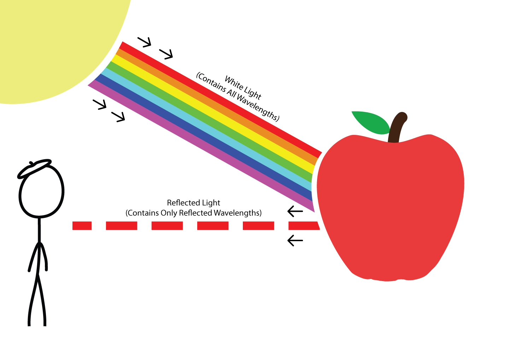

From the kindergarten years, we learn sea is blue, grass is green and flamingos are pink. But, if someone asks you "What is color?" we cannot easily answer with a concrete definition. Dictionary definition says that, color is the aspect of things that is caused by differing qualities of light being reflected or emitted by them.
To see color, you need light. When light shines on an object some colors bounce off the object and others are absorbed by it. Our eyes only see the colors that are bounced off or reflected.

In the image, you see a red apple, because only red lightwave is reflected from the apple's surface. Other
wavelengths are absorbed by the apple.
Human eye perception.
We can see colors thanks to our perception. But, how might we represent colors to tell computers?
We use different color schemes and representation techniques to represent colors. One technique is to use RGB color scheme. All visible colors can be represented as a combination of three primary colors. In the below, three sliders allow you to change RED, GREEN and BLUE values. So, you can easily change colors.
Below, the color is initally black, because all values are 0. If you change the red value from 0 to 255, you will see how red color changes when the intensity increases.
Now, set the colors to RGB(120, 120, 120), then try RGB(150, 150, 150). Continue, increasing the values equal between the slider. Did you realize some pattern? Did you obtain shades of grey?
To read further about color:
Color Realism and Color Science
Play with Color Wheel